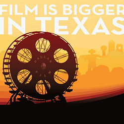

Tuned In
Tuned In
Thanks, your video has been suggested!
We'll notify you if the curators of 2012 Dallas International Film Festival approve it for all subscribers.|
|
|
|---|---|
|
 |
2012 Dallas International Film Festival
Latest VideosCurated by Dallas International Film Festival
About this ChannelWelcome to the 6th annual Dallas International Film Festival, presented by Boardwalk Auto Group Volkswagen Dealers and produced by the Dallas Film Society. Since the Lumire brothers wowed audiences with their first short films in the mid-1890s, movies have made a mark with everyone who sees them. This Festivals focus is not just to bring to Dallas contemporary independent films that make marks big enough for Texas and beyond Read More... |